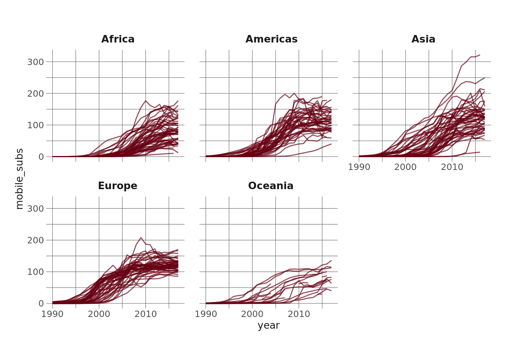

library(tidyverse)
library(eemisc)
library(harrypotter)
library(splines)
library(tidymodels)
library(patchwork)
library(kableExtra)
herm <- harrypotter::hp(n = 1, option = "HermioneGranger")
opts <- options(
ggplot2.discrete.fill = list(
harrypotter::hp(n = 3, option = "HermioneGranger"),
harrypotter::hp(n = 5, option = "Always")
)
)
theme_set(theme_ee())
mobile <- readr::read_csv('https://raw.githubusercontent.com/rfordatascience/tidytuesday/master/data/2020/2020-11-10/mobile.csv')I’ll keep the intro short and sweet for this one. A few weeks ago, I watched this screencast from Julia Silge in which she used splines to model the relationship between wins and seed in the Women’s NCAA Tournament. I don’t have a ton of experience using splines, and so that screencast made me want to learn a bit more and practice using them myself. Lo and behold, the phone subscription data from week 46 (2020) of #TidyTuesday seemed like a pretty good opportunity, so that’s what I’m doing here. More specifically, I’m using splines to model the relationship between year and the number of mobile phone subscriptions per 100 people across different continents and then investigating which countries these models perform best and worst for.
Let’s get right into it, then.
Setup
Very Brief Exploration
So, I kinda already know what I want to do, so I’m going to keep the exploration pretty minimal here. I will plot the number of mobile phone subscriptions for each country over time, though, just so I can get some feel for the relationships.
mobile %>%
ggplot(aes(x = year, y = mobile_subs, group = entity)) +
geom_line(alpha = .7, color = herm) +
facet_wrap(~ continent)
The most apparent takeaway here to me is that the relationship between year and mobile phone subscriptions is not linear – it looks sigmoidal to me. It also seems to differ by continent (although that may just be an artifact of faceting the continents).
Either way, I got into this to do some splines, so that’s what I’m going to do. First, let’s do a very brief and not statistically rigorous overview of what a spline is (n.b. for a better summary, go here). At a very high level, splines allow us to estimate flexible models to data. They do this by allowing us to include “knots” in our regression models and fitting smooth functions that model the data between consecutive knots. The person building the model can specify the number of knots (or degrees of freedom) they want to include in the model. Including more knots makes the function more flexible (but also, maybe obviously, increases model complexity), whereas including fewer knots makes the model simpler but less flexible.
Let’s try plotting a few different splines to the full dataset here to illustrate this.
plot_spline <- function(df) {
ggplot(mobile, aes(x = year, y = mobile_subs)) +
geom_smooth(
method = lm,
se = FALSE,
formula = y ~ ns(x, df = df),
color = herm
) +
labs(
title = glue::glue("{ df } degrees of freedom")
) +
theme_minimal()
}
plots_list <- map(c(2, 3, 4, 6, 8, 10), plot_spline)
wrap_plots(plots_list)Note that the number of knots is equal to 1 - the degrees of freedom. Anyway – looking at this, we can see noticeable differences between the models wtih 2, 3, and 4 degrees of freedom, but very little difference once we get beyond that, which makes me think that a 4 df spline is the way to go. I could more rigorously tune the degrees of freedom by fitting models with each and comparing the accuracy on holdout data, but visually examining it feels good enough here.
Fitting Models
Now, let’s fit a spline model for each continent. To do this, I’m going to first filter down to only the countries that have mobile phone data for every year in the dataset (1990 - 2017). Next, I’m going to create a nested tibble for each continent using the nest() function, fit a spline for each continent using a combination of map(), lm(), and ns() (which is a function for natural splines). Finally, I’m going to use glance() from the {broom} package to get the R-squared for each continent’s model. I like this workflow for fitting multiple models because it keeps everything together in a tibble and really facilitates iterating with map().
complete_countries <- mobile %>%
group_by(entity) %>%
summarize(miss = sum(is.na(mobile_subs))) %>%
filter(miss == 0) %>%
pull(entity)
continent_df <- mobile %>%
select(continent, entity, year, mobile_subs) %>%
filter(entity %in% complete_countries) %>%
group_by(continent) %>%
nest() %>%
mutate(model = map(data, ~lm(mobile_subs ~ ns(year, df = 4), data = .x)),
rsq = map_dbl(model, ~glance(.x) %>% pull(1)))
continent_df# A tibble: 5 × 4
# Groups: continent [5]
continent data model rsq
<chr> <list> <list> <dbl>
1 Asia <tibble [1,202 × 3]> <lm> 0.689
2 Europe <tibble [1,119 × 3]> <lm> 0.869
3 Africa <tibble [1,146 × 3]> <lm> 0.684
4 Americas <tibble [846 × 3]> <lm> 0.822
5 Oceania <tibble [221 × 3]> <lm> 0.628So, the R-squared values here seem pretty good considering we’re only using year as a predictor. In Europe we’re getting .86, which seems very high, and suggests that most countries follow similar trajectories (which we can see in the very first plot above). What could be interesting, though, is to see which country in each continent this model performs best on and which it performs worst on. This will give us a sense of what the most “typical” country is (the country that most closely follows the overall continent model) and what the most atypical country is (the country that least closely follows the overall continent model) in each continent.
Examining Predictions & Accuracy
To do this, I’m first going to predict values for each observation (each year for each country) using augment(), again from {broom}. I’m then going to do a little bit of binding and straightening up, ending by unnesting the data.
preds_data <- continent_df %>%
ungroup() %>%
mutate(preds = map(model, ~augment(.x) %>% select(.fitted)),
joined_data = map2(data, preds, bind_cols)) %>%
select(joined_data,
continent_rsq = rsq,
continent) %>%
unnest(joined_data)Next, I’m going to calculate the R-squared for each country. There’s probably another way to do this, but it’s a pretty easy calculation to do by hand, so I’m just going to do that.
rsq_df <- preds_data %>%
group_by(entity) %>%
mutate(avg = mean(mobile_subs),
res = (mobile_subs - .fitted)^2,
tot = (mobile_subs - .fitted)^2 + (.fitted - avg)^2) %>%
summarize(country_rsq = 1 - (sum(res)/sum(tot))) %>%
ungroup() %>%
left_join(x = preds_data %>% distinct(entity, continent), y = ., by = "entity")Now, I’m going to pick filter down to the countries in each continent that have the highest R-squared (the country the model performs best on) and the lowest R-squared (the country the model performs worst on). One thing to note is that a low R-squared doesn’t mean the country has few mobile phone subscriptions, it just means that the model does a relatively bad job predicting the mobile phone subscriptions for that country. This could be for a number of reasons, only one of which is that the country has considerably fewer subscriptions each year.
selected_rsq <- rsq_df %>%
group_by(continent) %>%
filter(country_rsq == max(country_rsq) | country_rsq == min(country_rsq)) %>%
mutate(type = if_else(country_rsq == max(country_rsq), "best fit", "worst fit")) %>%
select(continent, entity, country_rsq, type) %>%
arrange(continent, country_rsq)
selected_rsq %>%
select(-type) %>%
kable(format = "html") %>%
kable_styling(bootstrap_options = c("condensed", "striped"))| continent | entity | country_rsq |
|---|---|---|
| Africa | Seychelles | 0.5109688 |
| Africa | Kenya | 0.9895082 |
| Americas | Curacao | 0.4431118 |
| Americas | Paraguay | 0.9864706 |
| Asia | Hong Kong | 0.5080236 |
| Asia | Philippines | 0.9916221 |
| Europe | Moldova | 0.6943629 |
| Europe | Faeroe Islands | 0.9868045 |
| Oceania | Kiribati | 0.5775901 |
| Oceania | French Polynesia | 0.9451227 |
Right, so, for example, we can see that the model fit using Europe’s data does the worst job predicting for Moldova and the best job for the Faeroe Islands.
Finally, let’s take a look at these best- and worst-fitting countries graphically
use_countries <- pull(selected_rsq, entity)
mobile_small_joined <- mobile %>%
filter(entity %in% use_countries) %>%
left_join(selected_rsq, by = c("entity", "continent"))
label_df <- mobile_small_joined %>%
group_by(entity) %>%
filter(mobile_subs == max(mobile_subs)) %>%
ungroup()
mobile %>%
filter(entity %in% use_countries) %>%
left_join(selected_rsq, by = c("entity", "continent")) %>%
ggplot(aes(x = year, y = mobile_subs, group = entity, color = type)) +
geom_line() +
geom_text(data = label_df, aes(label = entity), x = max(mobile$year), hjust = 1, fontface = "bold", show.legend = FALSE) +
facet_wrap(~ continent) +
scale_color_hp_d(option = "HermioneGranger",
name = "Model Fit") +
labs(
title = "Best and Worst Fitting Models"
)Let’s take a look at Hong Kong. It has the worst fit for the Asian model, but that’s because Hong Kong has way more mobile phones per person than other countries in Asia. On the other hand, we see that Kiribati (in Oceania) has way fewer than the model would predict. Both have (relatively) poor accuracy.
Okie dokie, I think that’s it for now. Hopefully this is helpful for others in dipping your toes into spline models but also for demonstrating a workflow for nesting data and using map() along with some other functions to fit and interrogate multiple models.
Reuse
Citation
BibTeX citation:
@online{ekholm2020,
author = {Eric Ekholm},
title = {Predicting {Mobile} {Phone} {Subscription} {Gorwth}},
date = {2020-11-18},
url = {https://www.ericekholm.com/posts/predicting-mobile-phone-subscription-growth},
langid = {en}
}
For attribution, please cite this work as:
Eric Ekholm. 2020. “Predicting Mobile Phone Subscription
Gorwth.” November 18, 2020. https://www.ericekholm.com/posts/predicting-mobile-phone-subscription-growth.